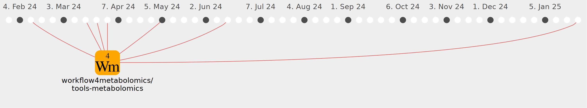

Galaxy Community Activities
llegregam
llegregam
https://github.com/llegregam
Commits all-time:
69
Commits last year:
31

workflow4metabolomics/tools-metabolomics
(31)
3fc1e5e
794da82
bcd7fe5
9b3aa41
2fd1735
6e361ee
fc84a39
367d1b7
bc4966a
9ab2479
d293c86
c924942
af19eaa
4598893
5f08a7d
23cfca4
1d9620a
f467191
770f343
1d6135e
cb1d528
4bb9950
b38ce7b
bb74614
7261dbb
d56f734
625f1f8
c56345e
3fa4e5b
bca27bc
f240ae4